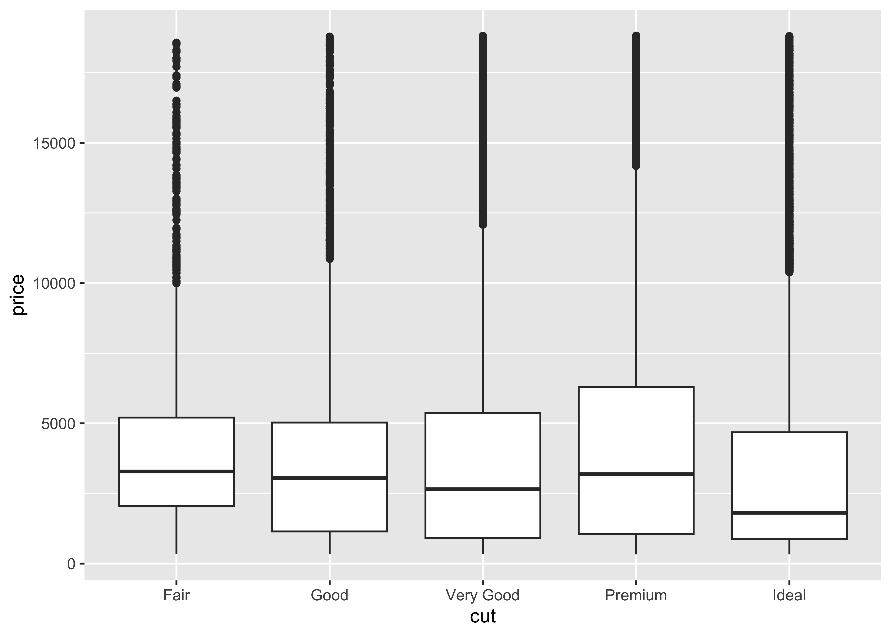
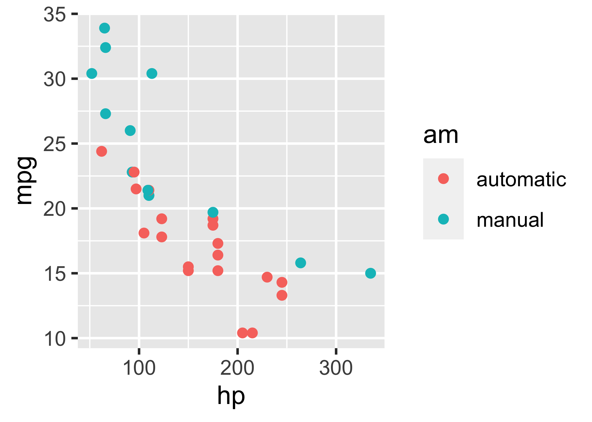

We know from _the first fundamental theorem of calculus_ that for $x$ in $[a, b]$:
$$\frac{d}{dx}\left( \int_{a}^{x} f(u)\,du\right)=f(x).$$Introduction
The Tufte handout style is a style that Edward Tufte uses in his books and handouts. Tufte’s style is known for its extensive use of sidenotes, tight integration of graphics with text, and well-set typography. This style has been implemented in LaTeX and HTML/CSS1, respectively. We have ported both implementations into the tufte package. If you want LaTeX/PDF output, you may use the tufte_handout format for handouts, and tufte_book for books. For HTML output, use tufte_html. These formats can be either specified in the YAML metadata at the beginning of an R Markdown document (see an example below), or passed to the rmarkdown::render() function. See Allaire et al. (2022) for more information about rmarkdown.
---
title: "An Example Using the Tufte Style"
author: "John Smith"
output:
tufte::tufte_handout: default
tufte::tufte_html: default
---There are two goals of this package:
- To produce both PDF and HTML output with similar styles from the same R Markdown document;
- To provide simple syntax to write elements of the Tufte style such as side notes and margin figures, e.g. when you want a margin figure, all you need to do is the chunk option
fig.margin = TRUE, and we will take care of the details for you, so you never need to think about\begin{marginfigure} \end{marginfigure}or<span class="marginfigure"> </span>; the LaTeX and HTML code under the hood may be complicated, but you never need to learn or write such code.
If you have any feature requests or find bugs in tufte, please do not hesitate to file them to https://github.com/rstudio/tufte/issues. For general questions, you may ask them on StackOverflow: https://stackoverflow.com/tags/rmarkdown.
Headings
This style provides first and second-level headings (that is, # and ##), demonstrated in the next section. You may get unexpected output if you try to use ### and smaller headings.
In his later books2, Tufte starts each section with a bit of vertical space, a non-indented paragraph, and sets the first few words of the sentence in small caps. To accomplish this using this style, call the newthought() function in tufte in an inline R expression `r ` as demonstrated at the beginning of this paragraph.3
Figures
Margin Figures
Images and graphics play an integral role in Tufte’s work. To place figures in the margin you can use the knitr chunk option fig.margin = TRUE. For example:
library(ggplot2)
mtcars2 <- mtcars
mtcars2$am <- factor(
mtcars$am, labels = c('automatic', 'manual')
)
ggplot(mtcars2, aes(hp, mpg, color = am)) +
geom_point() + geom_smooth() +
theme(legend.position = 'bottom')
Note the use of the fig.cap chunk option to provide a figure caption. You can adjust the proportions of figures using the fig.width and fig.height chunk options. These are specified in inches, and will be automatically scaled down to fit within the handout margin.
Arbitrary Margin Content
In fact, you can include anything in the margin using the knitr engine named marginfigure. Unlike R code chunks ```{r}, you write a chunk starting with ```{marginfigure} instead, then put the content in the chunk. See an example on the right about the first fundamental theorem of calculus.
For the sake of portability between LaTeX and HTML, you should keep the margin content as simple as possible (syntax-wise) in the marginefigure blocks. You may use simple Markdown syntax like **bold** and _italic_ text, but please refrain from using footnotes, citations, or block-level elements (e.g. blockquotes and lists) there.
Note: if you set echo = FALSE in your global chunk options, you will have to add echo = TRUE to the chunk to display a margin figure, for example ```{marginfigure, echo = TRUE}.
Full Width Figures
You can arrange for figures to span across the entire page by using the chunk option fig.fullwidth = TRUE.
ggplot(diamonds, aes(carat, price)) + geom_smooth() +
facet_grid(~ cut)
Other chunk options related to figures can still be used, such as fig.width, fig.cap, out.width, and so on. For full width figures, usually fig.width is large and fig.height is small. In the above example, the plot size is \(10 \times 2\).
Arbitrary Full Width Content
Any content can span to the full width of the page. This feature requires Pandoc 2.0 or above. All you need is to put your content in a fenced Div with the class fullwidth, e.g.,
::: {.fullwidth}
Any _full width_ content here.
:::Below is an example:
R is free software and comes with ABSOLUTELY NO WARRANTY. You are welcome to redistribute it under the terms of the GNU General Public License versions 2 or 3. For more information about these matters see https://www.gnu.org/licenses/.
Main Column Figures
Besides margin and full width figures, you can of course also include figures constrained to the main column. This is the default type of figures in the LaTeX/HTML output.
ggplot(diamonds, aes(cut, price)) + geom_boxplot()
Sidenotes
One of the most prominent and distinctive features of this style is the extensive use of sidenotes. There is a wide margin to provide ample room for sidenotes and small figures. Any use of a footnote will automatically be converted to a sidenote. 4
If you’d like to place ancillary information in the margin without the sidenote mark (the superscript number), you can use the margin_note() function from tufte in an inline R expression. This is a margin note. Notice that there is no number preceding the note. This function does not process the text with Pandoc, so Markdown syntax will not work here. If you need to write anything in Markdown syntax, please use the marginfigure block described previously.
References
References can be displayed as margin notes for HTML output. For example, we can cite R here (R Core Team 2022). To enable this feature, you must set link-citations: yes in the YAML metadata, and the version of Pandoc should at least 2.11 or pandoc-citeproc should be available and at least 0.7.2. You can always install your own version of Pandoc from https://pandoc.org/installing.html if the version is not sufficient. To check the version of pandoc-citeproc in your system, you may run this in R:
system2('pandoc-citeproc', '--version')If your version of pandoc-citeproc is too low, or you did not set link-citations: yes in YAML, references in the HTML output will be placed at the end of the output document.
Tables
You can use the kable() function from the knitr package to format tables that integrate well with the rest of the Tufte handout style. The table captions are placed in the margin like figures in the HTML output.
knitr::kable(
mtcars[1:6, 1:6], caption = 'A subset of mtcars.'
)| mpg | cyl | disp | hp | drat | wt | |
|---|---|---|---|---|---|---|
| Mazda RX4 | 21.0 | 6 | 160 | 110 | 3.90 | 2.620 |
| Mazda RX4 Wag | 21.0 | 6 | 160 | 110 | 3.90 | 2.875 |
| Datsun 710 | 22.8 | 4 | 108 | 93 | 3.85 | 2.320 |
| Hornet 4 Drive | 21.4 | 6 | 258 | 110 | 3.08 | 3.215 |
| Hornet Sportabout | 18.7 | 8 | 360 | 175 | 3.15 | 3.440 |
| Valiant | 18.1 | 6 | 225 | 105 | 2.76 | 3.460 |
Block Quotes
We know from the Markdown syntax that paragraphs that start with > are converted to block quotes. If you want to add a right-aligned footer for the quote, you may use the function quote_footer() from tufte in an inline R expression. Here is an example:
“If it weren’t for my lawyer, I’d still be in prison. It went a lot faster with two people digging.”
Without using quote_footer(), it looks like this (the second line is just a normal paragraph):
“Great people talk about ideas, average people talk about things, and small people talk about wine.”
— Fran Lebowitz
Responsiveness
The HTML page is responsive in the sense that when the page width is smaller than 760px, sidenotes and margin notes will be hidden by default. For sidenotes, you can click their numbers (the superscripts) to toggle their visibility. For margin notes, you may click the circled plus signs to toggle visibility.
More Examples
The rest of this document consists of a few test cases to make sure everything still works well in slightly more complicated scenarios. First we generate two plots in one figure environment with the chunk option fig.show = 'hold':
p <- ggplot(mtcars2, aes(hp, mpg, color = am)) +
geom_point()
p
p + geom_smooth()

Then two plots in separate figure environments (the code is identical to the previous code chunk, but the chunk option is the default fig.show = 'asis' now):
p <- ggplot(mtcars2, aes(hp, mpg, color = am)) +
geom_point()
p
p + geom_smooth()

You may have noticed that the two figures have different captions, and that is because we used a character vector of length 2 for the chunk option fig.cap (something like fig.cap = c('first plot', 'second plot')).
Next we show multiple plots in margin figures. Similarly, two plots in the same figure environment in the margin:
p
p + geom_smooth(method = 'lm')`geom_smooth()` using formula = 'y ~ x'

Then two plots from the same code chunk placed in different figure environments:
| Sepal.Length | Sepal.Width | Petal.Length | Petal.Width | Species |
|---|---|---|---|---|
| 5.1 | 3.5 | 1.4 | 0.2 | setosa |
| 4.9 | 3.0 | 1.4 | 0.2 | setosa |
| 4.7 | 3.2 | 1.3 | 0.2 | setosa |
| 4.6 | 3.1 | 1.5 | 0.2 | setosa |
| 5.0 | 3.6 | 1.4 | 0.2 | setosa |
| 5.4 | 3.9 | 1.7 | 0.4 | setosa |
| 4.6 | 3.4 | 1.4 | 0.3 | setosa |
| 5.0 | 3.4 | 1.5 | 0.2 | setosa |
| 4.4 | 2.9 | 1.4 | 0.2 | setosa |
| 4.9 | 3.1 | 1.5 | 0.1 | setosa |
| 5.4 | 3.7 | 1.5 | 0.2 | setosa |
| 4.8 | 3.4 | 1.6 | 0.2 | setosa |
| 4.8 | 3.0 | 1.4 | 0.1 | setosa |
| 4.3 | 3.0 | 1.1 | 0.1 | setosa |
| 5.8 | 4.0 | 1.2 | 0.2 | setosa |
| Sepal.Length | Sepal.Width | Petal.Length | Petal.Width | Species |
|---|---|---|---|---|
| 5.1 | 3.5 | 1.4 | 0.2 | setosa |
| 4.9 | 3.0 | 1.4 | 0.2 | setosa |
| 4.7 | 3.2 | 1.3 | 0.2 | setosa |
| 4.6 | 3.1 | 1.5 | 0.2 | setosa |
| 5.0 | 3.6 | 1.4 | 0.2 | setosa |
| 5.4 | 3.9 | 1.7 | 0.4 | setosa |
| 4.6 | 3.4 | 1.4 | 0.3 | setosa |
| 5.0 | 3.4 | 1.5 | 0.2 | setosa |
| 4.4 | 2.9 | 1.4 | 0.2 | setosa |
| 4.9 | 3.1 | 1.5 | 0.1 | setosa |
| 5.4 | 3.7 | 1.5 | 0.2 | setosa |
| 4.8 | 3.4 | 1.6 | 0.2 | setosa |
p + geom_smooth(method = 'lm')`geom_smooth()` using formula = 'y ~ x'| Sepal.Length | Sepal.Width | Petal.Length | Petal.Width | Species |
|---|---|---|---|---|
| 5.1 | 3.5 | 1.4 | 0.2 | setosa |
| 4.9 | 3.0 | 1.4 | 0.2 | setosa |
| 4.7 | 3.2 | 1.3 | 0.2 | setosa |
| 4.6 | 3.1 | 1.5 | 0.2 | setosa |
| 5.0 | 3.6 | 1.4 | 0.2 | setosa |


We blended some tables in the above code chunk only as placeholders to make sure there is enough vertical space among the margin figures, otherwise they will be stacked tightly together. For a practical document, you should not insert too many margin figures consecutively and make the margin crowded.
You do not have to assign captions to figures. We show three figures with no captions below in the margin, in the main column, and in full width, respectively.
# a boxplot of weight vs transmission; this figure
# will be placed in the margin
ggplot(mtcars2, aes(am, wt)) + geom_boxplot() +
coord_flip()
# a figure in the main column
p <- ggplot(mtcars, aes(wt, hp)) + geom_point()
p
# a fullwidth figure
p + geom_smooth(method = 'lm') + facet_grid(~ gear)`geom_smooth()` using formula = 'y ~ x'
Some Notes on Tufte CSS
There are a few other things in Tufte CSS that we have not mentioned so far. If you prefer sans-serif fonts, use the function sans_serif() in tufte. For epigraphs, you may use a pair of underscores to make the paragraph italic in a block quote, e.g.
I can win an argument on any topic, against any opponent. People know this, and steer clear of me at parties. Often, as a sign of their great respect, they don’t even invite me.
We hope you will enjoy the simplicity of R Markdown and this R package, and we sincerely thank the authors of the Tufte-CSS and Tufte-LaTeX projects for developing the beautiful CSS and LaTeX classes. Our tufte package would not have been possible without their heavy lifting.
You can turn on/off some features of the Tufte style in HTML output. The default features enabled are:
output:
tufte::tufte_html:
tufte_features: ["fonts", "background", "italics"]If you do not want the page background to be lightyellow, you can remove background from tufte_features. You can also customize the style of the HTML page via a CSS file. For example, if you do not want the subtitle to be italic, you can define
h3.subtitle em {
font-style: normal;
}in, say, a CSS file my_style.css (under the same directory of your Rmd document), and apply it to your HTML output via the css option, e.g.,
output:
tufte::tufte_html:
tufte_features: ["fonts", "background"]
css: "my_style.css"There is also a variant of the Tufte style in HTML/CSS named “Envisoned CSS”. This style can be used by specifying the argument tufte_variant = 'envisioned' in tufte_html()5, e.g.
output:
tufte::tufte_html:
tufte_variant: "envisioned"To see the R Markdown source of this example document, you may follow this link to Github, use the wizard in RStudio IDE (File -> New File -> R Markdown -> From Template), or open the Rmd file in the package:
file.edit(
tufte:::template_resources(
'tufte_html', '..', 'skeleton', 'skeleton.Rmd'
)
)This document is also available in Chinese, and its envisioned style can be found here.
References
Allaire, JJ, Yihui Xie, Jonathan McPherson, Javier Luraschi, Kevin Ushey, Aron Atkins, Hadley Wickham, Joe Cheng, Winston Chang, and Richard Iannone. 2022. Rmarkdown: Dynamic Documents for r. https://CRAN.R-project.org/package=rmarkdown.
R Core Team. 2022. R: A Language and Environment for Statistical Computing. Vienna, Austria: R Foundation for Statistical Computing. https://www.R-project.org/.
Footnotes
See Github repositories tufte-latex and tufte-css↩︎
Note you should not assume tufte has been attached to your R session. You should either
library(tufte)in your R Markdown document before you callnewthought(), or usetufte::newthought().↩︎This is a sidenote that was entered using a footnote.↩︎
The actual Envisioned CSS was not used in the tufte package. We only changed the fonts, background color, and text color based on the default Tufte style.↩︎